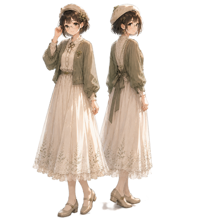

スタンダードプロフィール
落ち着いた雰囲気でまとめた、シンプルなプロフィールデザインです。

プロフィール
基本情報
- 名前：ひかる
- 出身地：九州
- 趣味・特技：読書・ゲーム・音楽鑑賞
- スキル：HTML / CSS / JavaScript
長所
- 傾聴力が高く、相手の意図を丁寧に汲み取れる
- 慎重で丁寧な作業ができ、品質を安定させられる
- 小さな違和感に気づける繊細さがある
短所
- 慎重になりすぎて時間がかかることがある
- 自分の強みを控えめに見積もりがち
- 完璧を求めてしまうことがある
制作スタイル
- 一つずつ確実に積み上げる丁寧な進め方
- 相手の意図を大切にしながら作る
- 落ち着いた雰囲気のデザインを好む
興味・学習中
- UIデザイン・世界観づくりに興味がある
- JavaScript / UIデザインを継続学習中
制作の意図
自然体で伝わるプロフィールを目指し、
落ち着いた空気感と読みやすさを大切にして制作しました。
“そっと寄り添う”雰囲気をそのまま形にしています。
こだわったポイント
- やわらかい配色で安心感を出す
- 余白を広めに取り、読みやすさを重視
- 言葉がまっすぐ届くよう、シンプルな構成に
使用技術
- HTML / CSS